1 2 3 4 5
0 49 51 47 0 0
1 0 0 0 23 7Generalized Measurement Models: Modeling Observed Dichotomous Data
Lecture 4c
Today’s Lecture Objectives
- Show how to estimate unidimensional latent variable models with dichotomous data
- Also known as Item Response Theory (IRT) or Item Factor Analysis (IFA) models
- Show how to estimate different parameterizations of IRT/IFA models
- Describe how to obtain IRT/IFA auxiliary statistics from Markov Chains
- Show variations of various dichotomous-data models
Example Data: Conspiracy Theories
Today’s example is from a bootstrap resample of 177 undergraduate students at a large state university in the Midwest. The survey was a measure of 10 questions about their beliefs in various conspiracy theories that were being passed around the internet in the early 2010s. Additionally, gender was included in the survey. All items responses were on a 5- point Likert scale with:
- Strongly Disagree
- Disagree
- Neither Agree or Disagree
- Agree
- Strongly Agree
Please note, the purpose of this survey was to study individual beliefs regarding conspiracies. The questions can provoke some strong emotions given the world we live in currently. All questions were approved by university IRB prior to their use.
Our purpose in using this instrument is to provide a context that we all may find relevant as many of these conspiracy theories are still prevalent today.
Conspiracy Theory Questions 1-5
Questions:
- The U.S. invasion of Iraq was not part of a campaign to fight terrorism, but was driven by oil companies and Jews in the U.S. and Israel.
- Certain U.S. government officials planned the attacks of September 11, 2001 because they wanted the United States to go to war in the Middle East.
- President Barack Obama was not really born in the United States and does not have an authentic Hawaiian birth certificate.
- The current financial crisis was secretly orchestrated by a small group of Wall Street bankers to extend the power of the Federal Reserve and further their control of the world’s economy.
- Vapor trails left by aircraft are actually chemical agents deliberately sprayed in a clandestine program directed by government officials.
Conspiracy Theory Questions 6-10
Questions:
- Billionaire George Soros is behind a hidden plot to destabilize the American government, take control of the media, and put the world under his control.
- The U.S. government is mandating the switch to compact fluorescent light bulbs because such lights make people more obedient and easier to control.
- Government officials are covertly Building a 12-lane "NAFTA superhighway" that runs from Mexico to Canada through America’s heartland.
- Government officials purposely developed and spread drugs like crack-cocaine and diseases like AIDS in order to destroy the African American community.
- God sent Hurricane Katrina to punish America for its sins.
DON’T DO THIS WITH YOUR DATA
Making Our Data Dichotomous
To show dichotomous-data models with our data, we will arbitrarily dichotomize our item responses:
- 0 == Response is Strongly Disagree or Disagree, or Neither
- 1 == Response is Agree, or Strongly Agree
Now, we could argue that a “1” represents someone who agrees with a statement and a zero is someone who disagrees or is neutral
Note that this is only for teaching purposes, such dichotomization shouldn’t be done
- There are distributions for multinomial categories (we discuss these next week)
- The results will reflect more of our choice for 0/1
But, we must first learn dichotomous data models before we get to models for polytomous data
Examining Dichotomous Data
Checking on one item (Item 1):
New item means:
PolConsp1 PolConsp2 PolConsp3 PolConsp4 PolConsp5 PolConsp6 PolConsp7
0.16949153 0.10169492 0.06779661 0.07909605 0.10734463 0.06214689 0.06214689
PolConsp8 PolConsp9 PolConsp10
0.03389831 0.11299435 0.06214689 Note: these items have a relatively low proportion of people agreeing with each conspiracy statement
- Highest mean: .169
- Lowest mean: .034
Dichotomous Data Distribution: Bernoulli
The Bernoulli Distribution
The Bernoulli distribution is a one-trial version of the Binomial distribution
- Sample space (support) \(Y \in \{0, 1\}\)
The probability mass function (pdf):
\[P(Y = y) = \pi^y\left(1-\pi\right)^{(1-y)}\]
The distribution has only one parameter: \(\pi\) (the probability \(Y=1\))
- Mean of the distribution: \(E(Y) = \pi\)
- Variance of the distribution: \(Var(Y) = \pi \left(1- \pi \right)\)
Definition: Dichotomous vs. Binary
Note the definitions of some of the words for data with two values:
- Dichotomous: Taking two values (without numbers attached)
- Binary: either zero or one (specifically: \(\{0,1 \}\))
Therefore:
- Not all dichotomous variables are binary (i.e., \(\{2, 7\}\) is a dichotomous variable)
- All binary variables are dichotomous
Finally:
- Bernoulli distributions are for binary variables
- Most dichotomous variables can be recoded as binary variables without loss of model effects
Models with Bernoulli Distributions
Generalized linear models using Bernoulli distributions put a linear model onto a transformation of the mean
- Link functions map the mean \(E(Y)\) from its original range of \([0,1]\) to \((-\infty, \infty)\)
For an unconditional (empty) model, this is shown here:
\[f\left( E \left(Y \right) \right) = f(\pi)\]
Link Functions for Bernoulli Distributions
Common choices for the link function (in latent variable models):
Logit (or log odds): \[f\left( \pi \right) = \log \left( \frac{\pi}{1-\pi} \right)\]
Probit: \[f\left( \pi \right) = \Phi^{-1} \left( \pi \right) \]
Where Phi is the inverse cumulative distribution of a standard normal distribution:
\[\Phi(Z) = \int_{-\infty}^Z \frac{1}{\sqrt{2\pi}} \exp \left( \frac{-x^2}{2} \right) dx\]
Less Common Link Functions
In the generalized linear models literature, there are a number of different link functions:
- Log-log: \(f\left( \pi \right) = -\log \left( -\log \left( \pi \right) \right)\)
- Complementary Log-Log: \(f\left( \pi \right) = \log \left( -\log \left( 1- \pi \right) \right)\)
Most of these seldom appear in latent variable models
- Each has a slightly different curve shape
Inverse Link Functions
Our latent variable models will be defined on the scale of the link function
- Sometimes we wish to convert back to the scale of the data
- Example: Test characteristic curves mapping \(\theta_p\) onto an expected test score
For this, we need the inverse link function
Logit (or log odds) link function: \[logit \left(\pi\right) = \log \left( \frac{\pi}{1-\pi} \right)\]
Logit (or log odds) inverse link function:
\[\pi = \frac{\exp \left(logit \left(\pi \right)\right)}{1+\exp \left(logit \left(\pi \right)\right)} = \frac{1}{1+\exp \left(-logit \left(\pi \right)\right)} = \left( 1+\exp \left(-logit \left(\pi \right)\right)\right)^{-1}\]
Latent Variable Models with Bernoulli Distributions for Observed Variables
Latent Variable Models with Bernoulli Distributions for Observed Variables
We can finally define a latent variable model for binary responses using a Bernoulli distribution
- To start, we will use the logit link function
- We will begin with the linear predictor we had from the normal distribution models (Confirmator factor analysis: \(\mu_i +\lambda_i\theta_p\))
For an item \(i\) and a person \(p\), the model becomes:
\[logit \left( P\left( Y_{pi}=1\right) \right) = \mu_i +\lambda_i\theta_p\]
- Note: the mean \(\pi_i\) is replaced by \(P\left(Y_{pi} = 1 |\theta_p \right)\)
- This is the mean of the observed variable, conditional on \(\theta_p\)
- The item intercept is \(\mu_i\): The expected logit when \(\theta_p = 0\)
- The item discrimination is \(\lambda_i\): The change in the logit for a one-unit increase in \(\theta_p\)
Model Family Names
Depending on your field, the model from the previous slide can be called:
- The two-parameter logistic (2PL) model with slope/intercept parameterization
- An item factor model
These names reflect the terms given to the model in diverging literatures:
- 2PL: Educational measurement
- Birnbaum, A. (1968). Some Latent Trait Models and Their Use in Inferring an Examinee’s Ability. In F. M. Lord & M. R. Novick (Eds.), Statistical Theories of Mental Test Scores (pp. 397-424). Reading, MA: Addison-Wesley.
- Item factor analysis: Psychology
- Christofferson, A.(1975). Factor analysis of dichotomous variables. Psychometrika , 40, 5-22.
Estimation methods are the largest difference between the two families
Differences from Normal Distributions
Recall our normal distribution models:
\[ \begin{array}{cc} Y_{pi} = \mu_i + \lambda_i \theta_p + e_{p,i}; & e_{p,i} \sim N\left(0, \psi_i^2 \right) \\ \end{array} \]
Compared to our Bernoulli distribution models:
\[logit \left( P\left( Y_{pi}=1\right) \right) = \mu_i +\lambda_i\theta_p\]
Differences:
- No residual (unique) variance \(\phi^2\) in Bernoulli distribution
- Only one parameter in distribution; variance is a function of the mean
- Identity link function in normal distribution: \(f(E(Y_{pi}|\theta_p)) = E(Y_{pi}|\theta_p)\)
- Model scale and data scale are the same
- Logit link function in Bernoulli distribution
- Model scale is different from data scale
From Model Scale to Data Scale
Commonly, the IRT or IFA model is shown on the data scale (using the inverse link function):
\[P\left( Y_{pi}=1\right) = \frac{\exp \left(\mu_i +\lambda_i\theta_p \right)}{1+\exp \left(\mu_i +\lambda_i\theta_p \right)}\]
The core of the model (the terms in the exponent on the right-hand side) is the same
- Models are equivalent
- \(P\left( Y_{pi}=1\right)\) is on the data scale
- \(logit \left( P\left( Y_{pi}=1\right) \right)\) is on the model (link) scale
Modeling All Data
As with the normal distribution (CFA) models, we use the Bernoulli distribution for all observed variables:
\[ \begin{array}{c} logit \left(Y_{p1} = 1 \right) = \mu_1 + \lambda_1 \theta_p \\ logit \left(Y_{p2} = 1 \right) = \mu_2 + \lambda_2 \theta_p \\ logit \left(Y_{p3} = 1 \right) = \mu_3 + \lambda_3 \theta_p \\ logit \left(Y_{p4} = 1 \right) = \mu_4 + \lambda_4 \theta_p \\ logit \left(Y_{p5} = 1 \right) = \mu_5 + \lambda_5 \theta_p \\ logit \left(Y_{p6} = 1 \right) = \mu_6 + \lambda_6 \theta_p \\ logit \left(Y_{p7} = 1 \right) = \mu_7 + \lambda_7 \theta_p \\ logit \left(Y_{p8} = 1 \right) = \mu_8 + \lambda_8 \theta_p \\ logit \left(Y_{p9} = 1 \right) = \mu_9 + \lambda_9 \theta_p \\ logit \left(Y_{p10} = 1 \right) = \mu_{10} + \lambda_{10} \theta_p \\ \end{array} \]
Measurement Model Analysis Steps
- Specify model
- Specify scale identification method for latent variables
- Estimate model
- Examine model-data fit
- Iterate between steps 1-4 until adequate fit is achieved
Measurement Model Auxiliary Components
- Score estimation (and secondary analyses with scores)
- Item evaluation
- Scale construction
- Equating
- Measurement invariance/differential item functioning
Model Specification
The set of equations on the previous slide formed step #1 of the Measurement Model Analysis Steps:
- Specify Model
The next step is:
- Specify scale identification method for latent variables
We will initially assume \(\theta_p \sim N(0,1)\), which allows us to estimate all item parameters of the model
- This is what we call a standardized latent variable
- They are like Z-scores
Model (Data) Likelihood Functions
The specification of the model defines the model (data) likelihood function for each type of parameter
- To demonstrate, let’s examine the data likelihood for the factor loading for the first item \(\lambda_1\)
The model (data) likelihood function can be defined conditional on all other parameter values (as in a block in an MCMC iteration)
- That is: hold \(\mu_1\) and \(\boldsymbol{\theta}\) constant
The likelihood is then:
\[f \left(Y_{p1} \mid \lambda_1 \right) = \prod_{p=1}^P \left( \pi_{p1} \right)^{Y_{p1}} \left(1- \pi_{p1} \right)^{1-Y_{p1}}\]
Model (Data) Log Likelihood Functions
As this number can be very small (making numerical precision an issue), we often take the log:
\[\log f \left(Y_{p1} \mid \lambda_1 \right) = \sum_{p=1}^P \log \left[ \left( \pi_{p1} \right)^{Y_{p1}} \left(1- \pi_{p1} \right)^{1-Y_{p1}}\right]\]
The key in the likelihood function is to substitute each person’s data-scale model for \(\pi_{p1}\):
\[ \pi_{p1} = \frac{\exp \left(\mu_1 +\lambda_1\theta_p \right)}{1+\exp \left(\mu_1 +\lambda_1\theta_p \right)} \]
Which then becomes:
\[\log f \left(Y_{p1} \mid \lambda_1 \right) = \sum_{p=1}^P \log \left[ \left( \frac{\exp \left(\mu_1 +\lambda_1\theta_p \right)}{1+\exp \left(\mu_1 +\lambda_1\theta_p \right)} \right)^{Y_{p1}} \left(1- \frac{\exp \left(\mu_1 +\lambda_1\theta_p \right)}{1+\exp \left(\mu_1 +\lambda_1\theta_p \right)} \right)^{1-Y_{p1}}\right]\]
Model (Data) Log Likelihood Functions
As an example for \(\lambda_1\):
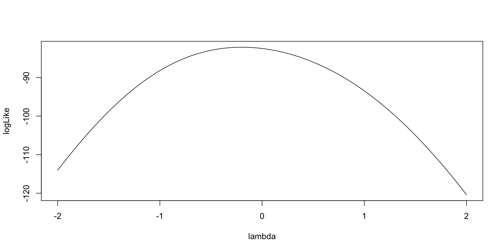Model (Data) Log Likelihood Functions for \(\theta_p\)
For each person, the same model (data) likelihood function is used
- Only now it varies across each item response
- Example: Person 1
\[f \left(Y_{1i} \mid \theta_1 \right) = \prod_{i=1}^I \left( \pi_{1i} \right)^{Y_{1i}} \left(1- \pi_{1i} \right)^{1-Y_{1i}}\]
Model (Data) Log Likelihood Functions
As an example for the log-likelihood for \(\theta_2\):
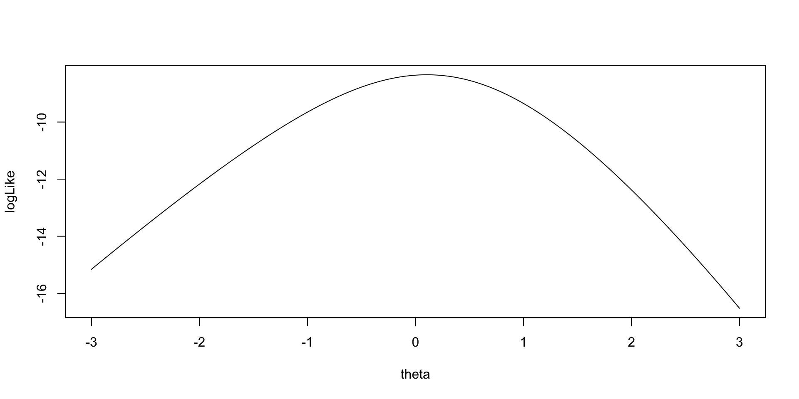Model (Data) Log Likelihood Functions
As an example for the log-likelihood for \(\theta_1\):
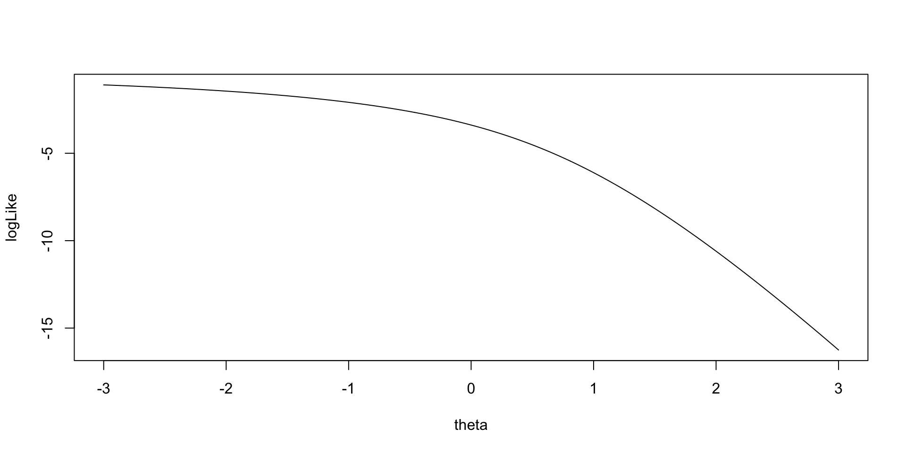Implementing Bernoulli Outcomes in Stan
Stan’s model Block
model {
lambda ~ multi_normal(meanLambda, covLambda); // Prior for item discrimination/factor loadings
mu ~ multi_normal(meanMu, covMu); // Prior for item intercepts
theta ~ normal(0, 1); // Prior for latent variable (with mean/sd specified)
for (item in 1:nItems){
Y[item] ~ bernoulli_logit(mu[item] + lambda[item]*theta);
}
}For logit models without lower/upper asymptote parameters, Stan has a convenient bernoulli_logit() function
- Automatically has the link function embedded
- The catch: The data have to be defined as an integer
Also, note that there are few differences from the normal outcomes models (CFA)
- No \(\psi\) parameters
Stan’s parameters Block
Only change from normal outcomes (CFA) model:
- No \(\psi\) parameters
Stan’s data {} Block
data {
int<lower=0> nObs; // number of observations
int<lower=0> nItems; // number of items
array[nItems, nObs] int<lower=0, upper=1> Y; // item responses in an array
vector[nItems] meanMu; // prior mean vector for intercept parameters
matrix[nItems, nItems] covMu; // prior covariance matrix for intercept parameters
vector[nItems] meanLambda; // prior mean vector for discrimination parameters
matrix[nItems, nItems] covLambda; // prior covariance matrix for discrimination parameters
}One difference from normal outcomes model:
array[nItems, nObs] int<lower=0, upper=1> Y;
- Arrays are types of matrices (with more than two dimensions possible)
- Allows for different types of data (here Y are integers)
- Integer-valued variables needed for
bernoulli_logit()function
- Integer-valued variables needed for
- Allows for different types of data (here Y are integers)
- Arrays are row-major (meaning order of items and persons is switched)
- Can define differently
Change to Data List for Stan Import
The switch of items and observations in the array statement means the data imported have to be transposed:
Running the Model In Stan
The Stan program takes longer to run than in linear models:
- Number of parameters = 197
- 10 observed variables (with two item parameters each: \(\mu_i\) and \(\lambda_i\))
- 177 latent variables (one for each person: 177 parameters)
- cmdstanr samples call:
- Note: Typically, longer chains are needed for larger models like this
- Note: Starting values added (mean of 5 is due to logit function limits)
- Helps keep definition of parameters (stay away from opposite mode)
- Too large of value can lead to NaN values (exceeding numerical precision)
Model Results
- Checking convergence with \(\hat{R}\) (PSRF):
[1] 1.001433- Item Parameter Results:
# A tibble: 20 × 10
variable mean median sd mad q5 q95 rhat ess_bulk ess_tail
<chr> <dbl> <dbl> <dbl> <dbl> <dbl> <dbl> <dbl> <dbl> <dbl>
1 mu[1] -2.47 -2.42 0.471 0.444 -3.32 -1.80 1.00 5795. 7316.
2 mu[2] -4.62 -4.45 1.12 1.02 -6.70 -3.13 1.00 5777. 5633.
3 mu[3] -4.89 -4.70 1.20 1.08 -7.11 -3.30 1.00 6085. 6213.
4 mu[4] -7.09 -6.68 2.25 1.92 -11.2 -4.28 1.00 5266. 5366.
5 mu[5] -16.2 -12.5 11.2 6.65 -40.6 -5.98 1.00 3897. 4691.
6 mu[6] -6.72 -6.30 2.20 1.77 -10.7 -4.11 1.00 5036. 4318.
7 mu[7] -7.31 -6.81 2.56 1.96 -11.8 -4.42 1.00 3415. 2265.
8 mu[8] -34.6 -32.3 16.1 16.1 -64.6 -12.9 1.00 7159. 8583.
9 mu[9] -7.44 -6.97 2.45 2.03 -12.0 -4.49 1.00 5165. 4596.
10 mu[10] -5.96 -5.65 1.76 1.46 -9.01 -3.83 1.00 4477. 4109.
11 lambda[1] 1.91 1.86 0.507 0.481 1.17 2.81 1.00 5252. 7170.
12 lambda[2] 3.23 3.09 0.978 0.891 1.90 5.04 1.00 4844. 5214.
13 lambda[3] 2.86 2.73 0.972 0.885 1.54 4.64 1.00 5341. 5791.
14 lambda[4] 4.87 4.55 1.77 1.53 2.65 8.17 1.00 4999. 4886.
15 lambda[5] 13.0 9.92 9.09 5.42 4.58 32.8 1.00 3691. 4604.
16 lambda[6] 4.20 3.90 1.67 1.38 2.18 7.18 1.00 4456. 4399.
17 lambda[7] 4.65 4.29 1.91 1.49 2.44 7.93 1.00 3250. 2200.
18 lambda[8] 21.6 20.1 10.4 10.3 7.64 40.8 1.00 6523. 8026.
19 lambda[9] 5.89 5.50 2.07 1.72 3.36 9.73 1.00 4727. 4113.
20 lambda[10] 3.61 3.40 1.35 1.14 1.93 5.94 1.00 4270. 3895.Modeling Strategy vs. Didactic Strategy
At this point, one should investigate model fit of the model we just ran
- If the model does not fit, then all model parameters could be biased
- Both item parameters and person parameters (\(\theta_p\))
- Moreover, the uncertainty accompanying each parameter (the posterior standard deviation) may also be biased
- Especially bad for psychometric models as we quantify reliaiblity with these numbers
But, to teach generalized measurement models, we will first talk about differing models for observed data
- Different distributions
- Different parameterizations across the different distributions
Investigating Item Parameters
One plot that can help provide information about the item parameters is the item characteristic curve (ICC)
- The ICC is the plot of the expected value of the response conditional on the value of the latent traits, for a range of latent trait values
\[E \left(Y_{pi} \mid \theta_p \right) = \frac{\exp \left(\mu_{i} +\lambda_{i}\theta_p \right)}{1+\exp \left(\mu_{i} +\lambda_{i}\theta_p \right)} \]
- Because we have sampled values for each parameter, we can plot one ICC for each posterior draw
Posterior ICC Plots
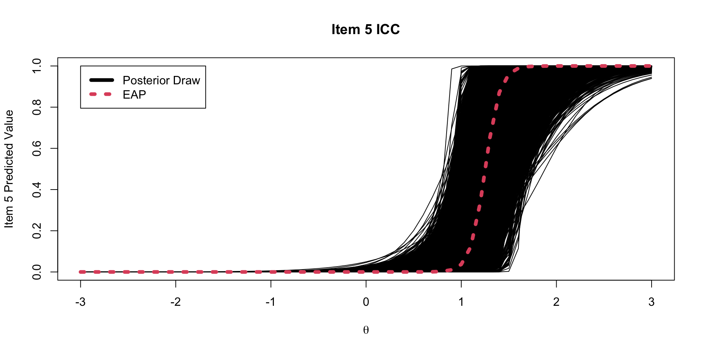Investigating the Item Parameters
Trace plots for \(\mu_i\)
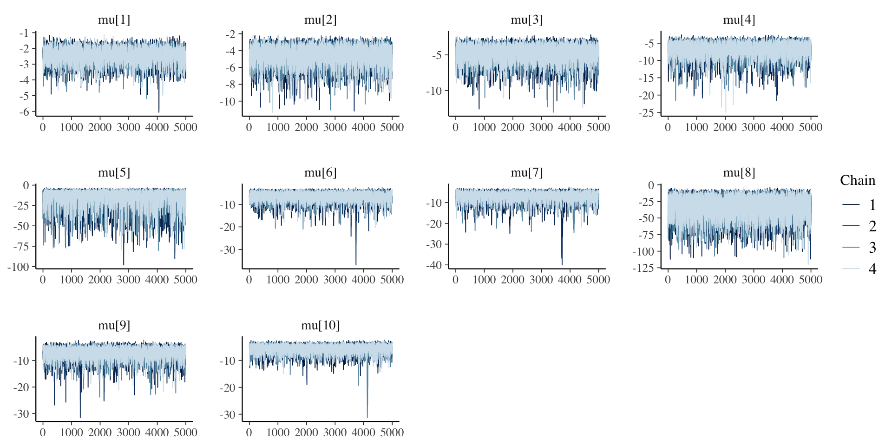Investigating the Item Parameters
Density plots for \(\mu_i\)
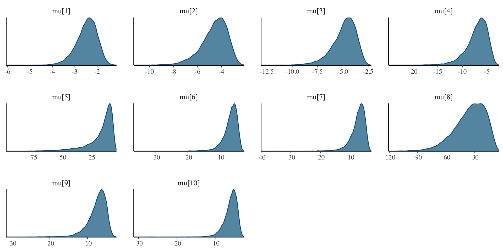Investigating the Item Parameters
Trace plots for \(\lambda_i\)
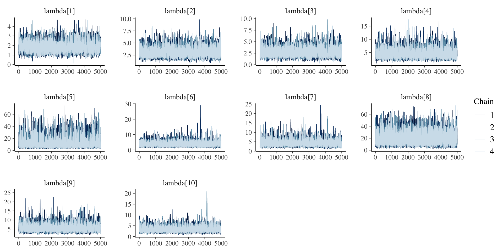Investigating the Item Parameters
Density plots for \(\lambda_i\)
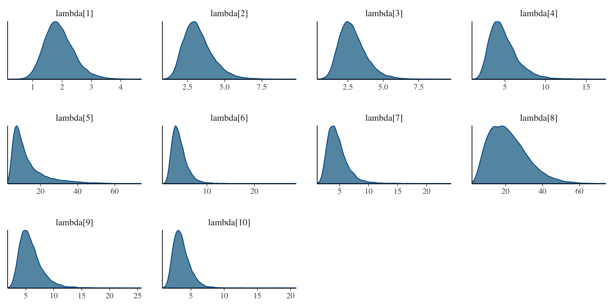Investigating the Item Parameters
Bivariate plots for \(\mu_i\) and \(\lambda_i\)
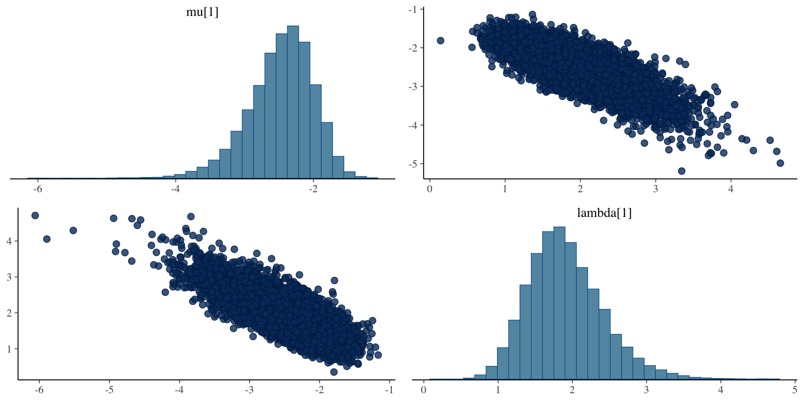Investigating the Latent Variables
The estimated latent variables are then:
# A tibble: 177 × 10
variable mean median sd mad q5 q95 rhat ess_bulk ess_tail
<chr> <dbl> <dbl> <dbl> <dbl> <dbl> <dbl> <dbl> <dbl> <dbl>
1 theta[1] -0.420 -0.351 0.771 0.786 -1.79 0.713 1.00 20783. 13381.
2 theta[2] 1.35 1.35 0.195 0.194 1.04 1.68 1.00 3182. 7438.
3 theta[3] 1.59 1.59 0.196 0.190 1.28 1.92 1.00 2920. 6731.
4 theta[4] -0.431 -0.362 0.788 0.812 -1.84 0.731 1.00 21364. 13898.
5 theta[5] -0.417 -0.347 0.770 0.788 -1.78 0.723 1.00 20033. 13403.
6 theta[6] -0.413 -0.335 0.777 0.800 -1.80 0.727 1.00 21656. 13717.
7 theta[7] 0.342 0.423 0.535 0.501 -0.662 1.06 1.00 12348. 8537.
8 theta[8] 0.599 0.668 0.431 0.392 -0.211 1.17 1.00 11272. 9547.
9 theta[9] -0.424 -0.357 0.779 0.796 -1.82 0.721 1.00 21114. 12838.
10 theta[10] -0.414 -0.343 0.770 0.792 -1.78 0.725 1.00 22522. 13164.
11 theta[11] -0.412 -0.342 0.773 0.786 -1.81 0.729 1.00 21329. 13979.
12 theta[12] -0.429 -0.354 0.785 0.794 -1.84 0.723 1.00 20081. 12769.
13 theta[13] -0.418 -0.353 0.767 0.798 -1.78 0.715 1.00 19474. 14221.
14 theta[14] -0.435 -0.358 0.787 0.797 -1.84 0.727 1.00 19625. 13297.
15 theta[15] -0.420 -0.352 0.779 0.799 -1.81 0.729 1.00 20652. 12989.
16 theta[16] -0.415 -0.349 0.773 0.791 -1.79 0.721 1.00 21160. 14397.
17 theta[17] -0.407 -0.337 0.774 0.790 -1.79 0.727 1.00 19561. 13413.
18 theta[18] -0.429 -0.357 0.783 0.788 -1.84 0.732 1.00 19854. 13088.
19 theta[19] 1.22 1.22 0.205 0.198 0.888 1.56 1.00 3823. 7971.
20 theta[20] -0.423 -0.342 0.781 0.784 -1.82 0.732 1.00 19941. 13031.
21 theta[21] -0.416 -0.346 0.775 0.786 -1.81 0.728 1.00 20877. 13434.
22 theta[22] -0.416 -0.347 0.778 0.795 -1.81 0.725 1.00 20171. 13306.
23 theta[23] -0.429 -0.362 0.785 0.809 -1.82 0.724 1.00 19814. 13741.
24 theta[24] -0.423 -0.354 0.778 0.798 -1.83 0.717 1.00 22286. 14546.
25 theta[25] 0.344 0.428 0.535 0.504 -0.655 1.06 1.00 13811. 10846.
26 theta[26] 1.11 1.13 0.214 0.202 0.746 1.45 1.00 5593. 9923.
27 theta[27] 0.822 0.868 0.325 0.290 0.222 1.27 1.00 8655. 8813.
28 theta[28] -0.419 -0.350 0.775 0.799 -1.80 0.727 1.00 19538. 11971.
29 theta[29] 0.926 0.961 0.291 0.262 0.397 1.33 1.00 7099. 8771.
30 theta[30] 1.40 1.39 0.182 0.179 1.11 1.70 1.00 3588. 7322.
31 theta[31] -0.422 -0.355 0.774 0.784 -1.79 0.730 1.00 22466. 13565.
32 theta[32] -0.429 -0.355 0.783 0.804 -1.83 0.726 1.00 19569. 12776.
33 theta[33] -0.409 -0.342 0.772 0.801 -1.79 0.727 1.00 21300. 12568.
34 theta[34] -0.410 -0.345 0.768 0.784 -1.78 0.727 1.00 22098. 13575.
35 theta[35] -0.426 -0.360 0.776 0.786 -1.83 0.725 1.00 20465. 13760.
36 theta[36] -0.418 -0.344 0.777 0.796 -1.82 0.718 1.00 19897. 13170.
37 theta[37] -0.409 -0.342 0.773 0.796 -1.80 0.725 1.00 20395. 13962.
38 theta[38] -0.413 -0.354 0.768 0.801 -1.76 0.722 1.00 20839. 13939.
39 theta[39] -0.416 -0.346 0.774 0.796 -1.80 0.726 1.00 21434. 12542.
40 theta[40] -0.420 -0.347 0.781 0.795 -1.82 0.735 1.00 20794. 12927.
41 theta[41] -0.420 -0.340 0.787 0.799 -1.83 0.732 1.00 20588. 12991.
42 theta[42] -0.411 -0.340 0.775 0.792 -1.80 0.720 1.00 18908. 12708.
43 theta[43] -0.414 -0.350 0.764 0.792 -1.79 0.720 1.00 21630. 14220.
44 theta[44] -0.422 -0.356 0.778 0.804 -1.79 0.728 1.00 21161. 13793.
45 theta[45] 1.14 1.16 0.232 0.214 0.732 1.48 1.00 5057. 7559.
46 theta[46] -0.410 -0.346 0.761 0.776 -1.76 0.712 1.00 21832. 14102.
47 theta[47] -0.416 -0.349 0.781 0.803 -1.80 0.734 1.00 22773. 13310.
48 theta[48] -0.427 -0.356 0.792 0.817 -1.83 0.730 1.00 20060. 12502.
49 theta[49] -0.420 -0.355 0.771 0.790 -1.79 0.724 1.00 21413. 14174.
50 theta[50] 0.929 0.961 0.286 0.262 0.405 1.33 1.00 6783. 10240.
51 theta[51] -0.419 -0.350 0.780 0.797 -1.80 0.724 1.00 20889. 12957.
52 theta[52] -0.426 -0.354 0.783 0.795 -1.83 0.718 1.00 19915. 13034.
53 theta[53] -0.414 -0.341 0.776 0.793 -1.80 0.734 1.00 21148. 13510.
54 theta[54] -0.423 -0.358 0.774 0.790 -1.81 0.722 1.00 21676. 14095.
55 theta[55] -0.416 -0.346 0.773 0.796 -1.80 0.721 1.00 21946. 13882.
56 theta[56] -0.419 -0.360 0.764 0.794 -1.77 0.716 1.00 20712. 14305.
57 theta[57] -0.416 -0.345 0.772 0.783 -1.81 0.710 1.00 21214. 14175.
58 theta[58] -0.418 -0.349 0.777 0.790 -1.82 0.722 1.00 20351. 13097.
59 theta[59] 0.334 0.422 0.544 0.506 -0.684 1.06 1.00 13140. 10067.
60 theta[60] -0.409 -0.341 0.770 0.791 -1.78 0.723 1.00 20539. 13503.
61 theta[61] 1.25 1.26 0.201 0.191 0.917 1.57 1.00 4316. 8558.
62 theta[62] -0.421 -0.346 0.777 0.787 -1.82 0.728 1.00 20480. 13521.
63 theta[63] -0.421 -0.349 0.782 0.803 -1.81 0.727 1.00 20151. 12810.
64 theta[64] 1.11 1.12 0.215 0.200 0.746 1.44 1.00 5496. 9175.
65 theta[65] -0.414 -0.337 0.770 0.787 -1.80 0.719 1.00 21495. 13807.
66 theta[66] -0.421 -0.347 0.781 0.789 -1.84 0.727 1.00 20729. 12513.
67 theta[67] -0.419 -0.351 0.768 0.790 -1.79 0.717 1.00 20900. 14178.
68 theta[68] -0.416 -0.345 0.774 0.788 -1.80 0.725 1.00 21483. 14021.
69 theta[69] -0.411 -0.337 0.772 0.785 -1.79 0.726 1.00 20471. 13401.
70 theta[70] -0.421 -0.349 0.771 0.778 -1.80 0.713 1.00 21923. 13389.
71 theta[71] -0.425 -0.358 0.778 0.788 -1.81 0.727 1.00 21176. 13630.
72 theta[72] 1.31 1.31 0.187 0.179 0.999 1.61 1.00 4022. 7963.
73 theta[73] -0.427 -0.358 0.778 0.789 -1.82 0.724 1.00 19174. 13065.
74 theta[74] -0.419 -0.346 0.785 0.807 -1.83 0.739 1.00 20558. 12539.
75 theta[75] -0.418 -0.352 0.781 0.794 -1.80 0.738 1.00 20161. 12711.
76 theta[76] 2.18 2.14 0.364 0.346 1.66 2.84 1.00 6322. 9369.
77 theta[77] -0.423 -0.355 0.778 0.797 -1.80 0.725 1.00 20393. 12832.
78 theta[78] 0.822 0.867 0.325 0.289 0.224 1.27 1.00 10758. 9795.
79 theta[79] 1.22 1.22 0.205 0.201 0.886 1.56 1.00 4047. 8640.
80 theta[80] -0.430 -0.358 0.774 0.784 -1.81 0.719 1.00 20308. 12851.
81 theta[81] -0.413 -0.339 0.775 0.778 -1.80 0.722 1.00 19823. 13190.
82 theta[82] -0.417 -0.344 0.776 0.786 -1.81 0.723 1.00 19247. 13931.
83 theta[83] -0.417 -0.348 0.772 0.782 -1.79 0.728 1.00 20113. 13134.
84 theta[84] 1.48 1.48 0.180 0.177 1.19 1.78 1.00 3080. 6847.
85 theta[85] 0.595 0.667 0.441 0.395 -0.223 1.17 1.00 11378. 9456.
86 theta[86] -0.422 -0.345 0.780 0.795 -1.82 0.720 1.00 20303. 13340.
87 theta[87] 0.533 0.613 0.473 0.431 -0.351 1.15 1.00 10694. 10006.
88 theta[88] -0.425 -0.348 0.781 0.800 -1.81 0.726 1.00 22139. 14473.
89 theta[89] -0.422 -0.349 0.782 0.804 -1.82 0.725 1.00 20241. 13501.
90 theta[90] 0.342 0.423 0.538 0.512 -0.665 1.06 1.00 15128. 10817.
91 theta[91] -0.421 -0.355 0.772 0.801 -1.79 0.720 1.00 20192. 13873.
92 theta[92] 1.24 1.25 0.201 0.188 0.903 1.55 1.00 4580. 7859.
93 theta[93] -0.417 -0.345 0.769 0.776 -1.81 0.713 1.00 19870. 13018.
94 theta[94] 1.84 1.81 0.248 0.237 1.47 2.27 1.00 3352. 6069.
95 theta[95] 1.42 1.42 0.180 0.176 1.13 1.72 1.00 3567. 7795.
96 theta[96] -0.413 -0.344 0.768 0.788 -1.79 0.730 1.00 19556. 14074.
97 theta[97] -0.421 -0.347 0.782 0.797 -1.81 0.728 1.00 19686. 12504.
98 theta[98] -0.423 -0.354 0.780 0.795 -1.81 0.737 1.00 21712. 14171.
99 theta[99] -0.421 -0.358 0.776 0.798 -1.80 0.736 1.00 20766. 13254.
100 theta[100] -0.416 -0.348 0.771 0.784 -1.80 0.721 1.00 20017. 12783.
101 theta[101] -0.424 -0.355 0.782 0.802 -1.82 0.730 1.00 20247. 13195.
102 theta[102] 1.76 1.75 0.228 0.216 1.42 2.17 1.00 3037. 5728.
103 theta[103] -0.413 -0.343 0.781 0.803 -1.80 0.723 1.00 19559. 12350.
104 theta[104] 1.43 1.43 0.178 0.175 1.15 1.73 1.00 3292. 6281.
105 theta[105] -0.418 -0.343 0.775 0.788 -1.81 0.723 1.00 20967. 13189.
106 theta[106] 0.910 0.947 0.301 0.273 0.362 1.33 1.00 7128. 9798.
107 theta[107] 1.48 1.48 0.179 0.175 1.19 1.78 1.00 3167. 7218.
108 theta[108] 0.345 0.435 0.534 0.494 -0.658 1.05 1.00 13326. 10502.
109 theta[109] -0.417 -0.351 0.779 0.798 -1.82 0.734 1.00 20777. 13645.
110 theta[110] -0.414 -0.339 0.776 0.795 -1.80 0.720 1.00 21418. 13344.
111 theta[111] -0.426 -0.360 0.777 0.801 -1.80 0.726 1.00 21695. 13511.
112 theta[112] 0.349 0.429 0.530 0.502 -0.659 1.06 1.00 14865. 11529.
113 theta[113] -0.415 -0.344 0.772 0.789 -1.80 0.708 1.00 20190. 13851.
114 theta[114] -0.416 -0.345 0.780 0.799 -1.81 0.731 1.00 20961. 13772.
115 theta[115] 1.43 1.43 0.179 0.177 1.14 1.73 1.00 3263. 7244.
116 theta[116] -0.414 -0.336 0.779 0.786 -1.82 0.725 1.00 19616. 13275.
117 theta[117] -0.418 -0.351 0.773 0.791 -1.80 0.726 1.00 19883. 13387.
118 theta[118] -0.418 -0.347 0.774 0.787 -1.81 0.714 1.00 19558. 13508.
119 theta[119] -0.416 -0.337 0.776 0.785 -1.80 0.720 1.00 21102. 13600.
120 theta[120] -0.429 -0.359 0.782 0.788 -1.81 0.723 1.00 19769. 12640.
121 theta[121] 0.708 0.770 0.400 0.360 -0.0470 1.24 1.00 7585. 9797.
122 theta[122] 0.345 0.427 0.533 0.501 -0.648 1.07 1.00 14526. 11034.
123 theta[123] -0.423 -0.352 0.773 0.787 -1.80 0.721 1.00 21452. 12928.
124 theta[124] -0.424 -0.354 0.772 0.798 -1.82 0.704 1.00 19607. 13302.
125 theta[125] -0.416 -0.345 0.776 0.800 -1.79 0.723 1.00 20154. 12739.
126 theta[126] 0.349 0.432 0.531 0.498 -0.635 1.07 1.00 13866. 12153.
127 theta[127] 0.914 0.952 0.296 0.267 0.384 1.33 1.00 7002. 9222.
128 theta[128] -0.415 -0.339 0.778 0.790 -1.81 0.730 1.00 20539. 12753.
129 theta[129] -0.419 -0.354 0.770 0.795 -1.78 0.719 1.00 21300. 13960.
130 theta[130] 1.71 1.70 0.209 0.201 1.39 2.07 1.00 2876. 5674.
131 theta[131] 0.340 0.431 0.543 0.506 -0.697 1.06 1.00 14162. 11074.
132 theta[132] 1.42 1.42 0.180 0.176 1.14 1.73 1.00 3603. 7466.
133 theta[133] -0.423 -0.344 0.782 0.801 -1.82 0.722 1.00 21124. 13975.
134 theta[134] 1.84 1.82 0.251 0.235 1.47 2.28 1.00 3169. 5375.
135 theta[135] -0.409 -0.340 0.767 0.785 -1.77 0.722 1.00 20861. 13054.
136 theta[136] -0.422 -0.350 0.771 0.784 -1.82 0.709 1.00 20578. 13454.
137 theta[137] -0.416 -0.344 0.777 0.794 -1.80 0.714 1.00 21015. 13067.
138 theta[138] -0.407 -0.341 0.770 0.789 -1.78 0.724 1.00 20648. 13361.
139 theta[139] -0.416 -0.350 0.769 0.790 -1.77 0.722 1.00 20134. 13585.
140 theta[140] 0.602 0.677 0.432 0.391 -0.212 1.17 1.00 11808. 10739.
141 theta[141] -0.413 -0.345 0.765 0.776 -1.79 0.717 1.00 19442. 12671.
142 theta[142] -0.417 -0.346 0.766 0.780 -1.79 0.710 1.00 20667. 12619.
143 theta[143] -0.415 -0.346 0.774 0.797 -1.80 0.719 1.00 20716. 14050.
144 theta[144] -0.421 -0.356 0.770 0.782 -1.78 0.720 1.00 18618. 12572.
145 theta[145] -0.424 -0.362 0.775 0.789 -1.81 0.729 1.00 20210. 13635.
146 theta[146] -0.419 -0.349 0.782 0.799 -1.82 0.727 1.00 19285. 13375.
147 theta[147] -0.414 -0.343 0.770 0.786 -1.78 0.721 1.00 19737. 13861.
148 theta[148] 1.24 1.23 0.194 0.189 0.922 1.56 1.00 4044. 7875.
149 theta[149] -0.414 -0.344 0.765 0.783 -1.78 0.708 1.00 21842. 14098.
150 theta[150] -0.420 -0.351 0.779 0.792 -1.82 0.722 1.00 19798. 12686.
151 theta[151] 0.343 0.429 0.541 0.503 -0.691 1.06 1.00 13091. 9706.
152 theta[152] -0.414 -0.337 0.779 0.795 -1.80 0.732 1.00 22454. 14411.
153 theta[153] 1.37 1.37 0.181 0.178 1.08 1.67 1.00 3723. 7054.
154 theta[154] -0.421 -0.352 0.771 0.797 -1.79 0.717 1.00 20921. 13123.
155 theta[155] -0.432 -0.359 0.786 0.806 -1.84 0.712 1.00 20730. 13044.
156 theta[156] -0.416 -0.345 0.778 0.787 -1.81 0.723 1.00 21608. 12990.
157 theta[157] -0.411 -0.330 0.769 0.775 -1.80 0.721 1.00 21002. 13019.
158 theta[158] -0.416 -0.345 0.773 0.799 -1.80 0.719 1.00 20998. 13331.
159 theta[159] 1.07 1.11 0.282 0.245 0.556 1.45 1.00 4695. 7645.
160 theta[160] -0.420 -0.353 0.780 0.804 -1.81 0.724 1.00 20506. 13503.
161 theta[161] 0.891 0.927 0.300 0.271 0.342 1.32 1.00 7554. 9668.
162 theta[162] 0.536 0.614 0.474 0.429 -0.356 1.16 1.00 10687. 10635.
163 theta[163] -0.418 -0.343 0.776 0.797 -1.81 0.723 1.00 20599. 12970.
164 theta[164] -0.409 -0.337 0.771 0.788 -1.77 0.726 1.00 20860. 13108.
165 theta[165] 0.930 0.962 0.283 0.258 0.411 1.33 1.00 7169. 9271.
166 theta[166] -0.420 -0.344 0.768 0.777 -1.80 0.715 1.00 19350. 13236.
167 theta[167] -0.411 -0.343 0.775 0.786 -1.79 0.731 1.00 21571. 13049.
168 theta[168] 1.11 1.12 0.214 0.200 0.747 1.44 1.00 5212. 8897.
169 theta[169] -0.415 -0.347 0.779 0.802 -1.79 0.731 1.00 20723. 13212.
170 theta[170] -0.423 -0.346 0.791 0.803 -1.84 0.736 1.00 19021. 12910.
171 theta[171] 0.861 0.906 0.320 0.281 0.264 1.30 1.00 8257. 9584.
172 theta[172] -0.413 -0.346 0.775 0.799 -1.79 0.721 1.00 19206. 13794.
173 theta[173] -0.422 -0.351 0.779 0.804 -1.81 0.717 1.00 20297. 13419.
174 theta[174] -0.416 -0.343 0.775 0.791 -1.80 0.718 1.00 20261. 12518.
175 theta[175] -0.425 -0.357 0.780 0.796 -1.83 0.705 1.00 19844. 12986.
176 theta[176] -0.433 -0.362 0.779 0.796 -1.82 0.714 1.00 20706. 13462.
177 theta[177] -0.417 -0.342 0.774 0.786 -1.80 0.722 1.00 20767. 14153.EAP Estimates of Latent Variables

Density of EAP Estimates

Comparing Two Posterior Distributions
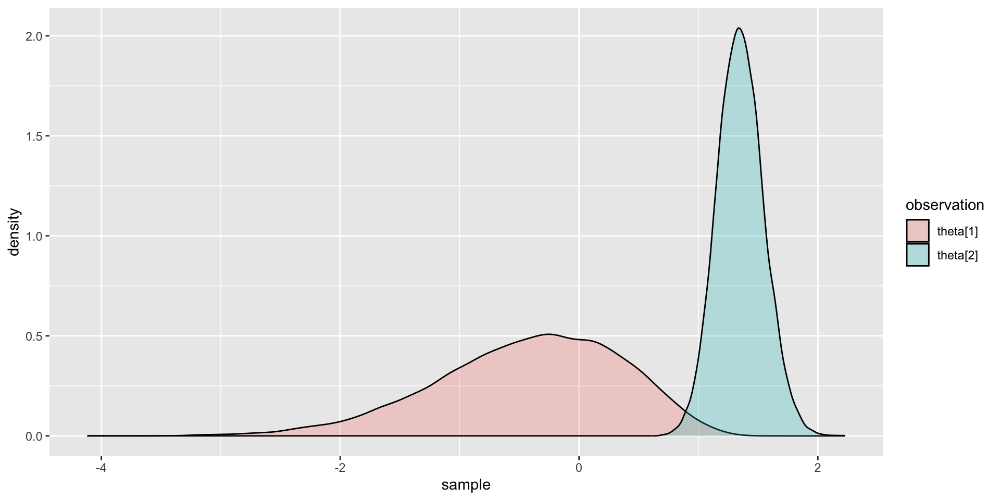Comparing EAP Estimates with Posterior SDs
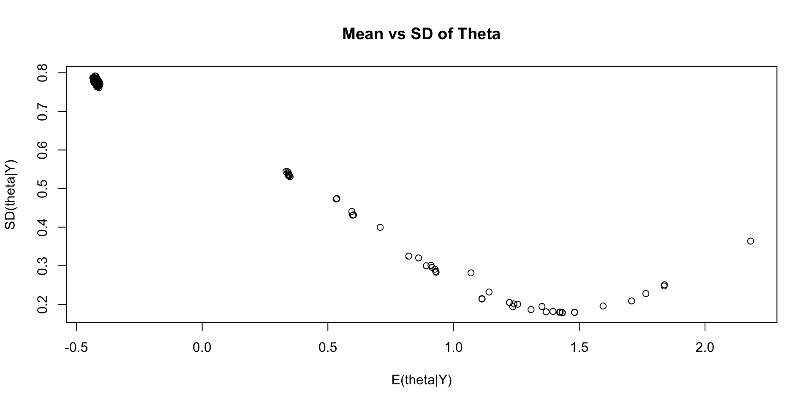Comparing EAP Estimates with Sum Score
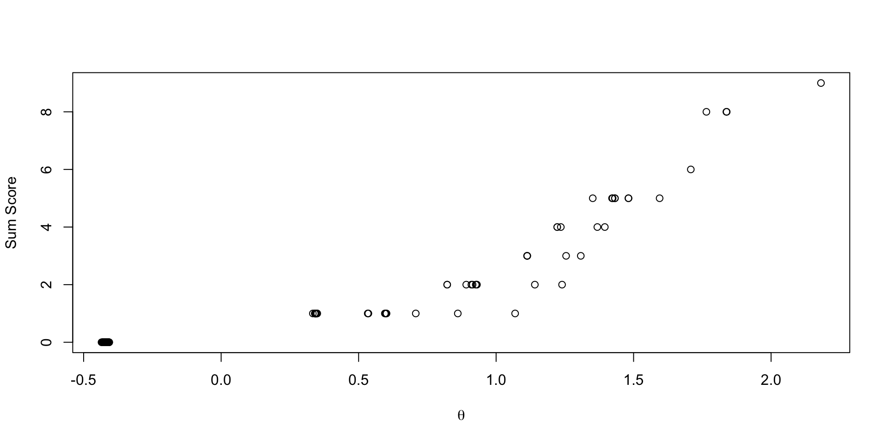Discrimination/Difficulty Parameterization
Discrimination/Difficulty Parameterization
The slope/intercept form is used in many model families:
- Confirmatory factor analysis
- Item factor analysis
- Multidimensional item response theory
In educational measurement, a more common form of the model is discrimination/difficulty:
\[logit \left( P\left( Y_{pi}=1 \mid \theta_p \right) \right) = a_i\left(\theta_p - b_i\right)\]
More commonly, this is expressed on the data scale: \[P\left( Y_{pi}=1 \mid \theta_p \right) = \frac{\exp \left( a_i\left(\theta_p - b_i\right) \right)}{1+\exp \left(a_i\left(\theta_p - b_i\right) \right)} \]
Comparisons of Parameterizations
We’ve mentioned before there is a one-one relationship between the models:
\[a_i\left(\theta_p - b_i\right) = -a_i b_i + a_i\theta_p = \mu_i + \lambda_i\theta_p\] Where:
- \(\mu_i = -a_ib_i\)
- \(\lambda_i = a_i\)
Alternatively:
- \(b_i = -\frac{\mu_i}{a_i}\)
- \(a_i = \lambda_i\)
Calculating Discrimination/Difficulty Parameters in Generated Quantities
We can calculate one parameterization from the other using Stan’s generated quantities:
Discrimination/Difficulty Parameter Estimates
# A tibble: 20 × 10
variable mean median sd mad q5 q95 rhat ess_bulk ess_tail
<chr> <dbl> <dbl> <dbl> <dbl> <dbl> <dbl> <dbl> <dbl> <dbl>
1 a[1] 1.90 1.85 0.497 0.475 1.16 2.79 1.00 5014. 6030.
2 a[2] 3.21 3.07 0.993 0.887 1.88 5.03 1.00 4973. 4384.
3 a[3] 2.88 2.73 1.01 0.895 1.54 4.75 1.00 3794. 4924.
4 a[4] 4.87 4.54 1.79 1.54 2.64 8.15 1.00 4145. 5161.
5 a[5] 13.1 9.91 9.43 5.49 4.57 33.1 1.00 2954. 3607.
6 a[6] 4.20 3.89 1.67 1.39 2.16 7.14 1.00 3541. 3780.
7 a[7] 4.64 4.31 1.88 1.48 2.44 7.85 1.00 4063. 3651.
8 a[8] 21.8 20.2 10.6 10.5 7.47 41.8 1.00 6391. 8311.
9 a[9] 5.86 5.50 2.02 1.71 3.31 9.56 1.00 4111. 4292.
10 a[10] 3.58 3.38 1.25 1.11 1.94 5.91 1.00 4605. 4838.
11 b[1] 1.34 1.31 0.247 0.219 1.00 1.78 1.00 3947. 7603.
12 b[2] 1.47 1.45 0.206 0.187 1.17 1.83 1.00 2856. 5512.
13 b[3] 1.78 1.73 0.320 0.263 1.38 2.35 1.00 2872. 5606.
14 b[4] 1.48 1.47 0.178 0.167 1.22 1.79 1.00 2101. 4385.
15 b[5] 1.26 1.26 0.124 0.123 1.06 1.47 1.00 1732. 4593.
16 b[6] 1.65 1.62 0.229 0.206 1.33 2.05 1.00 2438. 4697.
17 b[7] 1.61 1.59 0.208 0.192 1.31 1.98 1.00 2122. 4366.
18 b[8] 1.62 1.61 0.158 0.156 1.37 1.89 1.00 1494. 3405.
19 b[9] 1.27 1.27 0.136 0.136 1.06 1.51 1.00 1858. 4873.
20 b[10] 1.71 1.67 0.259 0.223 1.36 2.15 1.00 2639. 4852.Estimating the Discrimination/Difficulty Model
A change is needed to Stan’s model statement to directly estimate the discrimination/difficulty model:
model {
a ~ multi_normal(meanA, covA); // Prior for item discrimination/factor loadings
b ~ multi_normal(meanB, covB); // Prior for item intercepts
theta ~ normal(0, 1); // Prior for latent variable (with mean/sd specified)
for (item in 1:nItems){
Y[item] ~ bernoulli_logit(a[item]*(theta - b[item]));
}
}We can also estimate the slope/intercept parameters from the discrimination/difficulty parameters:
Model Results
Checking convergence:
[1] 1.001807Checking parameter estimates:
# A tibble: 20 × 10
variable mean median sd mad q5 q95 rhat ess_bulk ess_tail
<chr> <dbl> <dbl> <dbl> <dbl> <dbl> <dbl> <dbl> <dbl> <dbl>
1 a[1] 1.64 1.61 0.435 0.422 0.985 2.40 1.00 6190. 7045.
2 a[2] 2.70 2.59 0.798 0.735 1.59 4.17 1.00 7226. 9782.
3 a[3] 2.28 2.18 0.783 0.715 1.20 3.68 1.00 6318. 8130.
4 a[4] 3.88 3.66 1.33 1.13 2.18 6.31 1.00 7213. 8982.
5 a[5] 12.3 7.69 12.5 4.23 3.72 39.5 1.00 3141. 3986.
6 a[6] 3.23 3.03 1.20 1.02 1.71 5.46 1.00 6678. 7698.
7 a[7] 3.54 3.34 1.25 1.09 1.92 5.82 1.00 6749. 7760.
8 a[8] 27.4 23.4 18.0 17.0 6.12 62.4 1.00 4708. 2832.
9 a[9] 4.72 4.45 1.60 1.35 2.74 7.52 1.00 6449. 7794.
10 a[10] 2.82 2.68 0.968 0.866 1.53 4.62 1.00 7614. 8970.
11 b[1] 1.48 1.43 0.303 0.257 1.09 2.02 1.00 4944. 7147.
12 b[2] 1.60 1.58 0.236 0.214 1.27 2.03 1.00 4295. 7585.
13 b[3] 2.03 1.95 0.410 0.328 1.53 2.79 1.00 4731. 7224.
14 b[4] 1.62 1.61 0.200 0.186 1.33 1.97 1.00 3659. 6639.
15 b[5] 1.34 1.34 0.135 0.135 1.13 1.57 1.00 2752. 5870.
16 b[6] 1.85 1.81 0.294 0.250 1.47 2.35 1.00 3747. 6667.
17 b[7] 1.79 1.76 0.251 0.222 1.45 2.23 1.00 3546. 6637.
18 b[8] 1.77 1.76 0.172 0.165 1.50 2.06 1.00 1890. 1941.
19 b[9] 1.36 1.36 0.151 0.148 1.13 1.62 1.00 3269. 6883.
20 b[10] 1.92 1.87 0.325 0.268 1.50 2.50 1.00 4680. 7669.Comparing Difficulty Parameters
Difficulty parameters from discrimination/difficulty model:
# A tibble: 10 × 10
variable mean median sd mad q5 q95 rhat ess_bulk ess_tail
<chr> <dbl> <dbl> <dbl> <dbl> <dbl> <dbl> <dbl> <dbl> <dbl>
1 b[1] 1.48 1.43 0.303 0.257 1.09 2.02 1.00 4944. 7147.
2 b[2] 1.60 1.58 0.236 0.214 1.27 2.03 1.00 4295. 7585.
3 b[3] 2.03 1.95 0.410 0.328 1.53 2.79 1.00 4731. 7224.
4 b[4] 1.62 1.61 0.200 0.186 1.33 1.97 1.00 3659. 6639.
5 b[5] 1.34 1.34 0.135 0.135 1.13 1.57 1.00 2752. 5870.
6 b[6] 1.85 1.81 0.294 0.250 1.47 2.35 1.00 3747. 6667.
7 b[7] 1.79 1.76 0.251 0.222 1.45 2.23 1.00 3546. 6637.
8 b[8] 1.77 1.76 0.172 0.165 1.50 2.06 1.00 1890. 1941.
9 b[9] 1.36 1.36 0.151 0.148 1.13 1.62 1.00 3269. 6883.
10 b[10] 1.92 1.87 0.325 0.268 1.50 2.50 1.00 4680. 7669.Difficulty parameters from slope/intercept model:
# A tibble: 10 × 10
variable mean median sd mad q5 q95 rhat ess_bulk ess_tail
<chr> <dbl> <dbl> <dbl> <dbl> <dbl> <dbl> <dbl> <dbl> <dbl>
1 b[1] 1.34 1.31 0.247 0.219 1.00 1.78 1.00 3947. 7603.
2 b[2] 1.47 1.45 0.206 0.187 1.17 1.83 1.00 2856. 5512.
3 b[3] 1.78 1.73 0.320 0.263 1.38 2.35 1.00 2872. 5606.
4 b[4] 1.48 1.47 0.178 0.167 1.22 1.79 1.00 2101. 4385.
5 b[5] 1.26 1.26 0.124 0.123 1.06 1.47 1.00 1732. 4593.
6 b[6] 1.65 1.62 0.229 0.206 1.33 2.05 1.00 2438. 4697.
7 b[7] 1.61 1.59 0.208 0.192 1.31 1.98 1.00 2122. 4366.
8 b[8] 1.62 1.61 0.158 0.156 1.37 1.89 1.00 1494. 3405.
9 b[9] 1.27 1.27 0.136 0.136 1.06 1.51 1.00 1858. 4873.
10 b[10] 1.71 1.67 0.259 0.223 1.36 2.15 1.00 2639. 4852.Comparing Difficulty Parameters: Plot
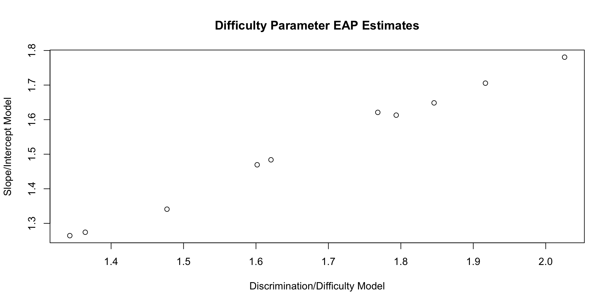Comparing Discrimination Parameters
Discrimination parameters from discrimination/difficulty model:
# A tibble: 10 × 10
variable mean median sd mad q5 q95 rhat ess_bulk ess_tail
<chr> <dbl> <dbl> <dbl> <dbl> <dbl> <dbl> <dbl> <dbl> <dbl>
1 a[1] 1.64 1.61 0.435 0.422 0.985 2.40 1.00 6190. 7045.
2 a[2] 2.70 2.59 0.798 0.735 1.59 4.17 1.00 7226. 9782.
3 a[3] 2.28 2.18 0.783 0.715 1.20 3.68 1.00 6318. 8130.
4 a[4] 3.88 3.66 1.33 1.13 2.18 6.31 1.00 7213. 8982.
5 a[5] 12.3 7.69 12.5 4.23 3.72 39.5 1.00 3141. 3986.
6 a[6] 3.23 3.03 1.20 1.02 1.71 5.46 1.00 6678. 7698.
7 a[7] 3.54 3.34 1.25 1.09 1.92 5.82 1.00 6749. 7760.
8 a[8] 27.4 23.4 18.0 17.0 6.12 62.4 1.00 4708. 2832.
9 a[9] 4.72 4.45 1.60 1.35 2.74 7.52 1.00 6449. 7794.
10 a[10] 2.82 2.68 0.968 0.866 1.53 4.62 1.00 7614. 8970.Discrimination parameters from slope/intercept model:
# A tibble: 10 × 10
variable mean median sd mad q5 q95 rhat ess_bulk ess_tail
<chr> <dbl> <dbl> <dbl> <dbl> <dbl> <dbl> <dbl> <dbl> <dbl>
1 a[1] 1.90 1.85 0.497 0.475 1.16 2.79 1.00 5014. 6030.
2 a[2] 3.21 3.07 0.993 0.887 1.88 5.03 1.00 4973. 4384.
3 a[3] 2.88 2.73 1.01 0.895 1.54 4.75 1.00 3794. 4924.
4 a[4] 4.87 4.54 1.79 1.54 2.64 8.15 1.00 4145. 5161.
5 a[5] 13.1 9.91 9.43 5.49 4.57 33.1 1.00 2954. 3607.
6 a[6] 4.20 3.89 1.67 1.39 2.16 7.14 1.00 3541. 3780.
7 a[7] 4.64 4.31 1.88 1.48 2.44 7.85 1.00 4063. 3651.
8 a[8] 21.8 20.2 10.6 10.5 7.47 41.8 1.00 6391. 8311.
9 a[9] 5.86 5.50 2.02 1.71 3.31 9.56 1.00 4111. 4292.
10 a[10] 3.58 3.38 1.25 1.11 1.94 5.91 1.00 4605. 4838.Comparing Discrimination Parameters: Plot
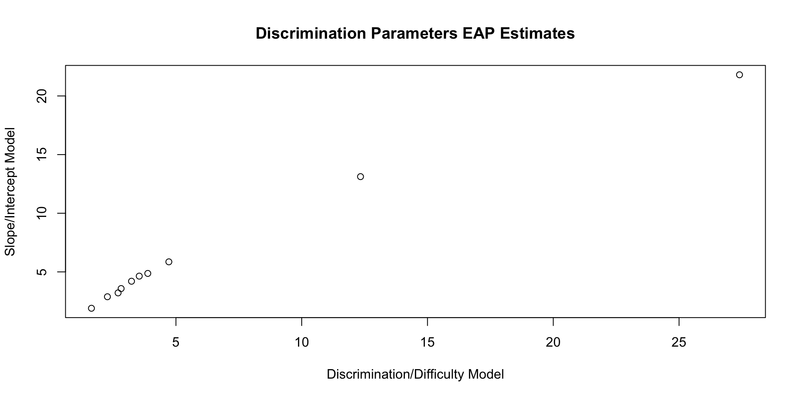Comparing Theta EAP Estimates

Comparing Theta SD Estimates
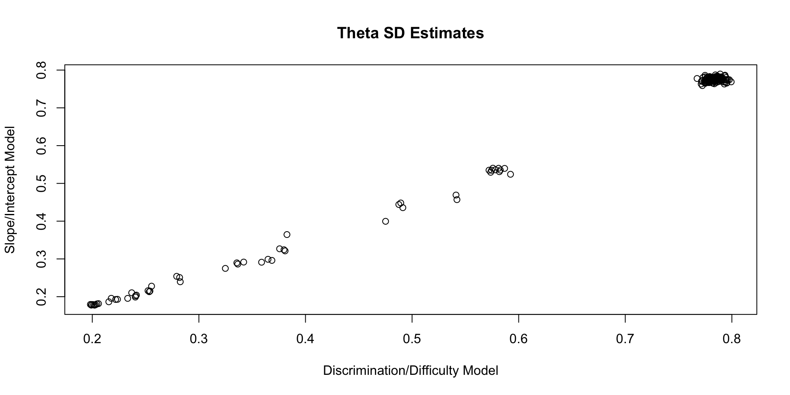Posterior Distributions Are Different
Although the parameters of each type of model can be found from the others, the posterior distributions are not the same
- Prior distributions are defined on the coded model parameters
- Posterior distributions are not necessarily the same
- But are linearly related (in this case)
- More extreme choices of priors would lead to more extreme differences
Estimating IRT Model Auxiliary Statistics
Estimating IRT Model Auxiliary Statistics
We can also use the generated quantities block to estimate some important auxiliary statitics from IRT models
- Test characteristic curve estimates (with posterior standard deviations); TCC
- Item information functions (with posterior standard deviations); IIF
- Test information functions (with posterior standard deviations); TIF
Shown for the discrimination/difficulty parameterization (but applies to slope/intercept, too)
The key:
- Define a set of \(\theta\) values and import them into Stan
- Then calculate each statistic using (conditional on) each value of \(\theta\) imported
Range of \(\theta\)
To begin, define a range of \(\theta\) over which you wish to calculate these statistics
- As we’ve used a standardized \(\theta\), we can define that range being from \(\[-3, 3\]\)
- Covers about 99% of the distribution of \(\theta\)
- Here, I am creating a sequence that adds .01 to each successive values (only first 10 shown)
- Makes for better plots
- More values (smaller interval) slows the estimation process down
- More values also takes more memory to store chains
Test Characteristic Curves
The test characteristic curve is formed by taking the sum of the expected value for each item, conditional on a value of \(\theta\)
\[TCC(\theta) = \sum_{i=1}^I \frac{\exp \left(a_i \left(\theta -b_i \right) \right)}{1+ \exp \left(a_i \left(\theta-b_i \right) \right)}\]
We must compute this for each imported value of \(\theta\) across all iterations of the Markov Chain
TCC Plots
Each TCC theta-to-raw score conversion has its own posterior standard error
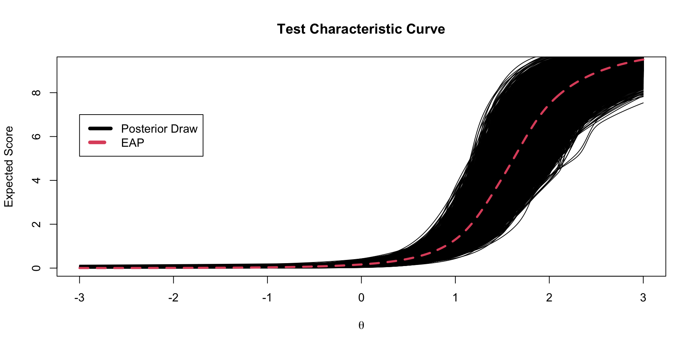Item Information
An item information function quantifies the amount of information about the latent trait provided by an item
- Note: the derivation of information is for MAP estimates (so not the contribution to the posterior standard deviation)
For a given value of \(\theta\), we can calculate an item’s information by taking the second partial derivative the model/data likelihood for an time with respect to \(\theta\)
- For the two-parameter logistic model this is:
\[I_i\left( \theta \right) = a_i^2 \left(\frac{\exp \left(a_i \left(\theta -b_i \right) \right)}{1+ \exp \left(a_i \left(\theta-b_i \right) \right)} \right) \left(1-\frac{\exp \left(a_i \left(\theta -b_i \right) \right)}{1+ \exp \left(a_i \left(\theta-b_i \right) \right)} \right)\]
Item Information from Markov Chains
Using generated quantities, we can also calculate the item information for each item at each step of the chain.
- We must also use a set of theta values to calculate this across (as with the TCC)
Item Information Functions
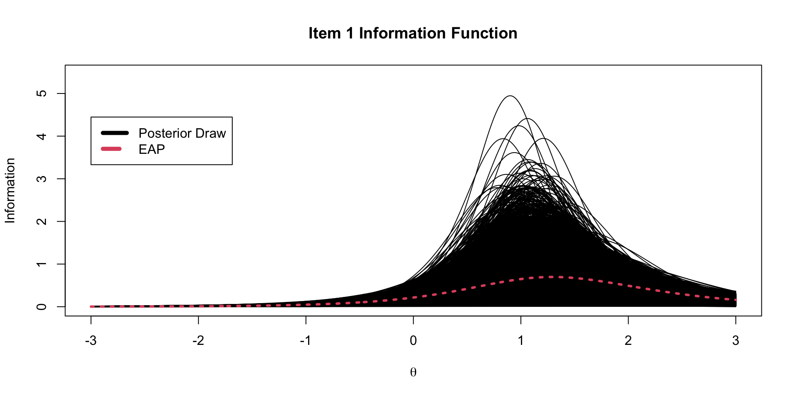Test Information Function
The test information function is the sum of the item information functions for a given value of \(\theta\)
- But, as we are in Bayesian, we must also include the information from the prior distribution of \(\theta\)
- Found by taking the second partial derivative of the pdf of the prior distribution with respect to \(\theta\)
- When \(\theta\) has the standardized factor parameterization, this value is simply -1
- We can use Stan’s generated quantities to calculate this, too
For the 2PL model, the test information function is then:
\[TIF\left( \theta \right) = -1+ \sum_{i=1}^I a_i^2 \left(\frac{\exp \left(a_i \left(\theta -b_i \right) \right)}{1+ \exp \left(a_i \left(\theta-b_i \right) \right)} \right) \left(1-\frac{\exp \left(a_i \left(\theta -b_i \right) \right)}{1+ \exp \left(a_i \left(\theta-b_i \right) \right)} \right)\]
TIF Spaghetti Plots
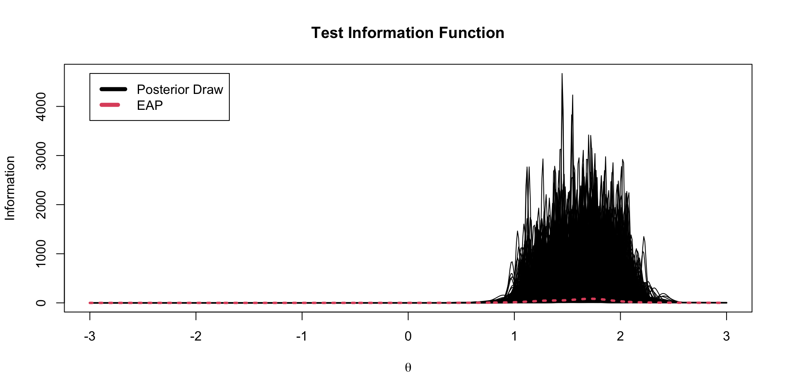EAP TIF Plot
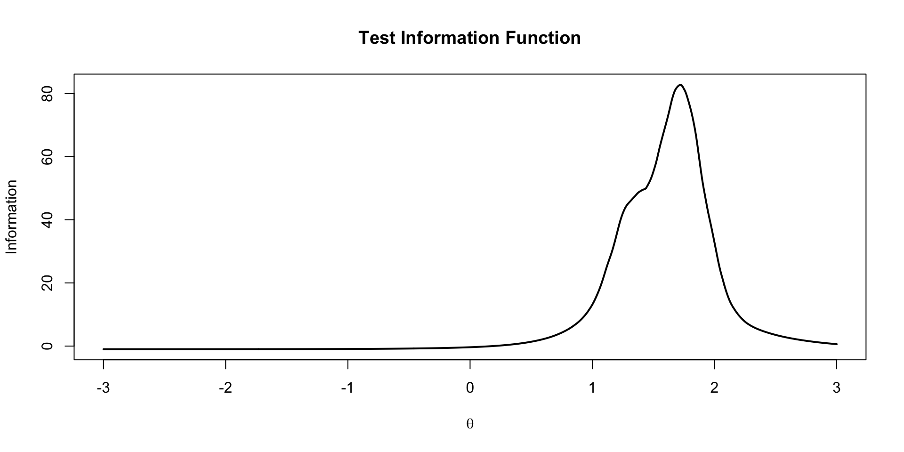Other IRT/IFA Models
Other IRT/IFA Models
There are a number of different IRT models that can be implemented in Stan
- A slight change is needed in the model statement for the observed data
Up to now, for the 2PL model, we had:
model {
a ~ multi_normal(meanA, covA); // Prior for item discrimination/factor loadings
b ~ multi_normal(meanB, covB); // Prior for item intercepts
theta ~ normal(0, 1); // Prior for latent variable (with mean/sd specified)
for (item in 1:nItems){
Y[item] ~ bernoulli_logit(a[item]*(theta - b[item]));
}The function bernoulli_logit() will only work for the 1- and 2PL models
- It applies the logit link function to the inner portion of the function, then transforms it to a probability, then evaluates the Bernoulli likelihood
Slight Change in Parameterization
To make this more general, we must construct the model using just the Bernoulli function:
model {
a ~ multi_normal(meanA, covA); // Prior for item discrimination/factor loadings
b ~ multi_normal(meanB, covB); // Prior for item intercepts
theta ~ normal(0, 1); // Prior for latent variable (with mean/sd specified)
for (item in 1:nItems){
Y[item] ~ bernoulli(inv_logit(a[item]*(theta - b[item])));
}Here, the result of inv_logit() is a probability for each person and item
- Then, the
bernoulli()function calculates the likelihood based on the probability from each item
1PL Model
Item Response Function: \[ P\left(Y_{pi} = 1 \mid \theta_p \right) = \frac{\exp \left(\theta -b_i \right)}{1+ \exp \left(\theta-b_i \right)} \]
The 1PL model can be built by removing the \(a\) parameter:
data {
int<lower=0> nObs; // number of observations
int<lower=0> nItems; // number of items
array[nItems, nObs] int<lower=0, upper=1> Y; // item responses in a matrix
vector[nItems] meanB; // prior mean vector for coefficients
matrix[nItems, nItems] covB; // prior covariance matrix for coefficients
}
parameters {
vector[nObs] theta; // the latent variables (one for each person)
vector[nItems] b; // the factor loadings/item discriminations (one for each item)
real<lower=0> sdTheta; // standard deviation for latent variable
}
model {
b ~ multi_normal(meanB, covB); // Prior for item intercepts
theta ~ normal(0, sdTheta); // Prior for latent variable (with mean specified/sd estimated)
sdTheta ~ exponential(.1); // Prior for latent variable standard deviation
for (item in 1:nItems){
Y[item] ~ bernoulli(inv_logit(theta - b[item]));
}
}3PL Model
Item Response Function: \[ P\left(Y_{pi} = 1 \mid \theta_p \right) = c_i +\left(1-c_i\right)\left[\frac{\exp \left(a_i \left(\theta -b_i \right) \right)}{1+ \exp \left(a_i \left(\theta-b_i \right) \right)}\right] \]
parameters {
vector[nObs] theta; // the latent variables (one for each person)
vector[nItems] a;
vector[nItems] b; // the factor loadings/item discriminations (one for each item)
vector<lower=0, upper=1>[nItems] c;
}
model {
a ~ multi_normal(meanA, covA); // Prior for item intercepts
b ~ multi_normal(meanB, covB); // Prior for item intercepts
c ~ beta(1,1); // Simple prior for c parameter
theta ~ normal(0, 1); // Prior for latent variable (with mean/sd specified)
for (item in 1:nItems){
Y[item] ~ bernoulli(c[item] + (1-c[item])*inv_logit(a[item]*(theta - b[item])));
}
}Two-Parameter Normal Ogive Model
Item Response Function: \[ P\left(Y_{pi} = 1 \mid \theta_p \right) = \Phi \left(a_i \left(\theta -b_i \right)\right) \]
Stan’s function Phi() converts the term in the function to a probability using the inverse normal CDF
Wrapping Up
Wrapping Up
This lecture covered models for dichotomous data
- Many different models can be estimated using Stan with minimal changes to syntax
- All IRT auxiliary statistics (i.e, TIF, TCC, IIF) can be computed within Stan